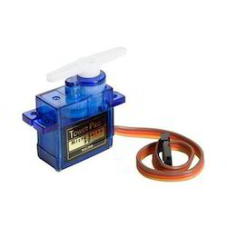
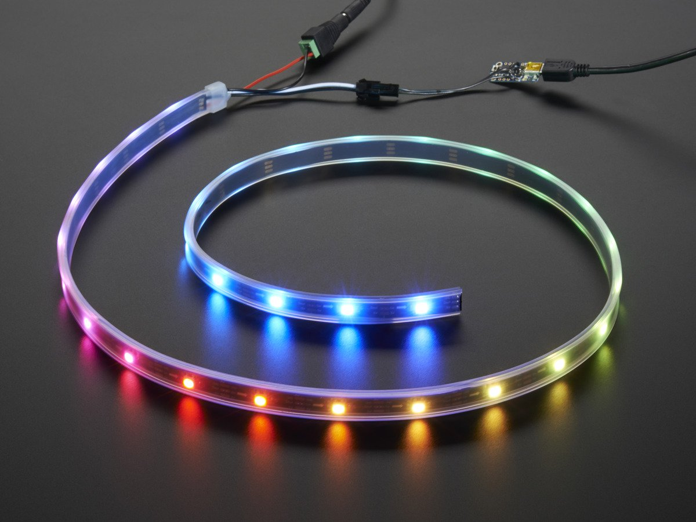
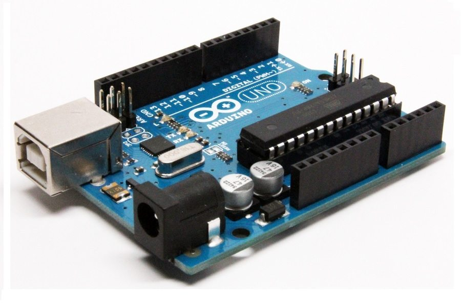
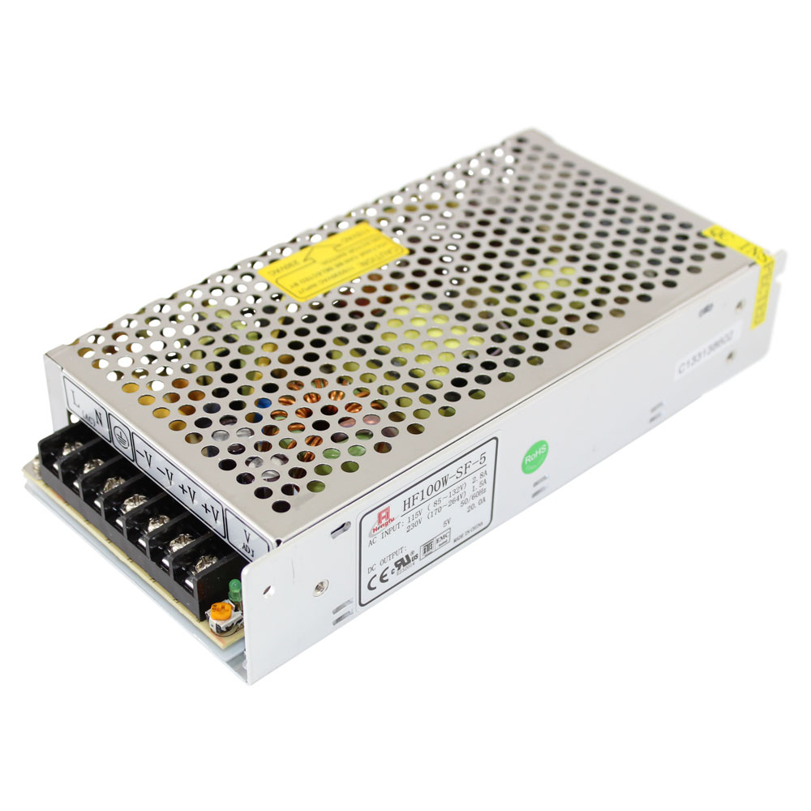
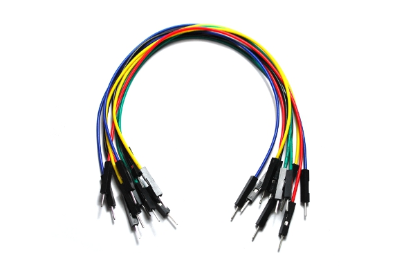

1. Ultrasonic sensors
Two of these sensors were used. The first sensor will tell the proximity of a person near the dustbin.The second sensor will detect the level of trash in the dustbin.
2. Servo Motors
Two motors are placed on the lid of the dustbin. They control the motion of opening and closing of the lid. They are linked with the ultrasonic sensors and are processing the data which the ultrasonic sensors are recieving.
3. Neopixel LED
These lights are placed on the front. These are synced with the ultrasonic sensors and indicated the level of trash in the bin.The number of led lights lit up are proportional to the amount of trash in it.
4. Arduino UNO
It is an open source electronic platform. It holds the code which was generated on the arduino software to give specifications of the sensors and servo motors.
5. Power Supply
The power supply is used to power up the circuit. The alternative of the power supply is to use a power bank with a USB cable.
6. Jumper Wires
A lot of these wires were used for connecting the circuit.Jumper wires are easy to use for prototyping as it is easy to connect and disconnect them.
